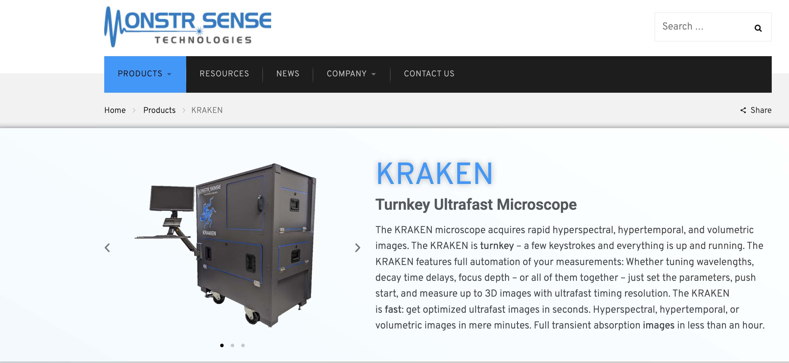

Kraken - Ultrafast Microscope

We have had the opportunity to work as consultants for Monster Sense Technologies, a cutting-edge technology company based in Ann Arbor, Michigan. Our focus was on supporting the launch of their upcoming multi-million-dollar material actualization product, a revolutionary offering poised to enter the market soon.
As part of our engagement, we conducted an in-depth market assessment to evaluate how the new product could be best positioned to attract and retain customers. This involved identifying key market trends, understanding target customer segments, and exploring potential use cases across industries.
In addition to market research, we performed a comprehensive website assessment to ensure that the company's digital presence effectively communicates the product's value proposition. We analyzed site structure, content clarity, user experience, and branding alignment to make sure the new product would be compelling and accessible to online visitors.
We also carried out a detailed competitive analysis, examining leading players in the material innovation space. This helped identify gaps in the current market offerings and provided insights into how Monster Sense Technologies can differentiate itself through features, pricing, and messaging.
Finally, we delivered a robust set of actionable recommendations covering go-to-market strategies, user engagement tactics, brand positioning, and digital communication improvements. These insights are designed to help Monster Sense Technologies maximize their product's impact and ensure a successful launch.